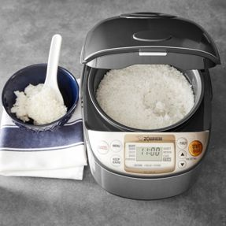

Back to Home
Rice

Ingredients:
Rice
Salt
Pepper
Rice Intructions
Measure rice and put into appropriate container
wash the rice until water runs clear/mostly clear
if using rice cooker (preferred):
measure according to the instructions
turn it on and wait
when it beeps it is done.
add salt, and whatever else.
grab pot
boil water in pot (salt if desired, or salt individual serving portions.
stir rice into the water, let water turn to a simmer, stir, add lid, and turn the heat low
check on rice in about 18 minutes. if not done, re-place lid and come back in a few minutes to check again.
wonder why you didn't just use a rice cooker in the first place.
When done, turn off heat, move pot from burner, and let sit for a few more minutes.
take off lid, fluff rice, and let sit for a minute or two, then enjoy.